Prontos para consultar no celular ou imprimir e usar durante o atendimento, antes de quebrar a parede ou trocar qualquer peça.
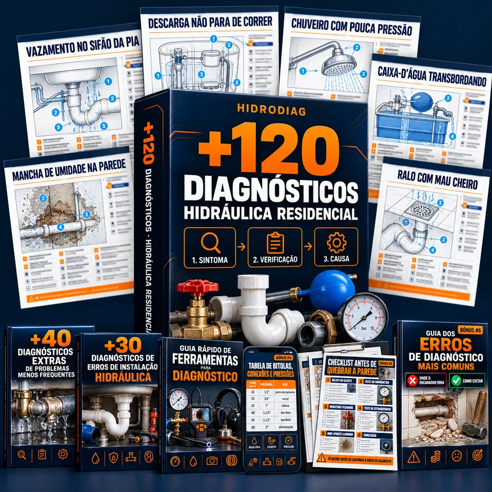
QUERO OS 120 DIAGNÓSTICOSVocê já sabe mexer com hidráulica. O que trava é descobrir a causa.
O cliente mostra uma mancha na parede, uma descarga que não para ou um chuveiro fraco. Você testa, verifica, procura a origem... e ainda fica na dúvida. Às vezes, até quebra no lugar errado.
Com o HIDRODIAG, você sabe por onde começar. São 120 diagnósticos prontos, com sintomas, causas prováveis, verificações na ordem certa e o próximo passo. Tudo organizado em uma única página por problema.
Não é curso para assistir depois. É consulta para usar na hora, com o cliente do lado.
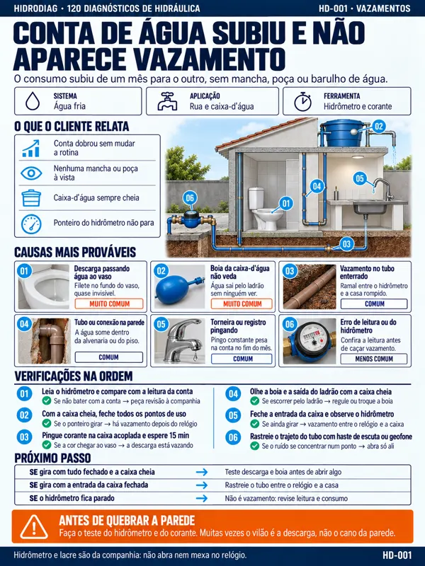
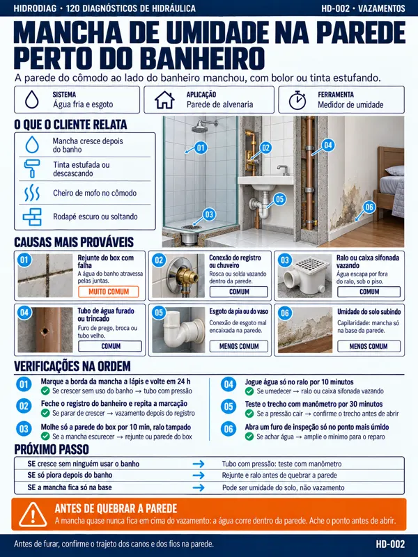
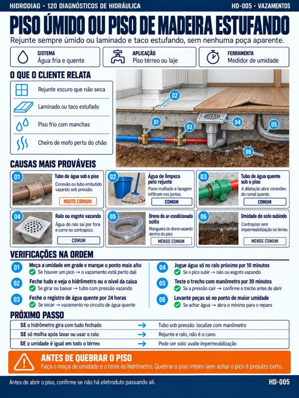
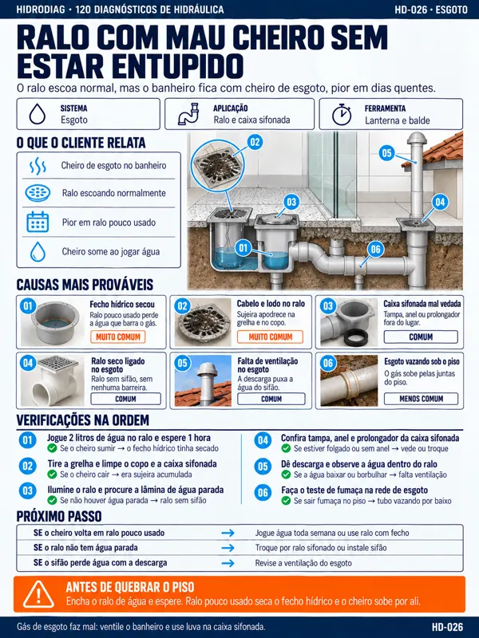
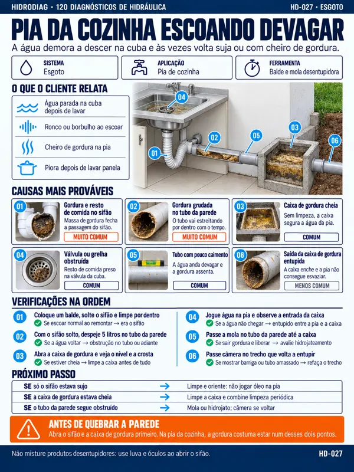
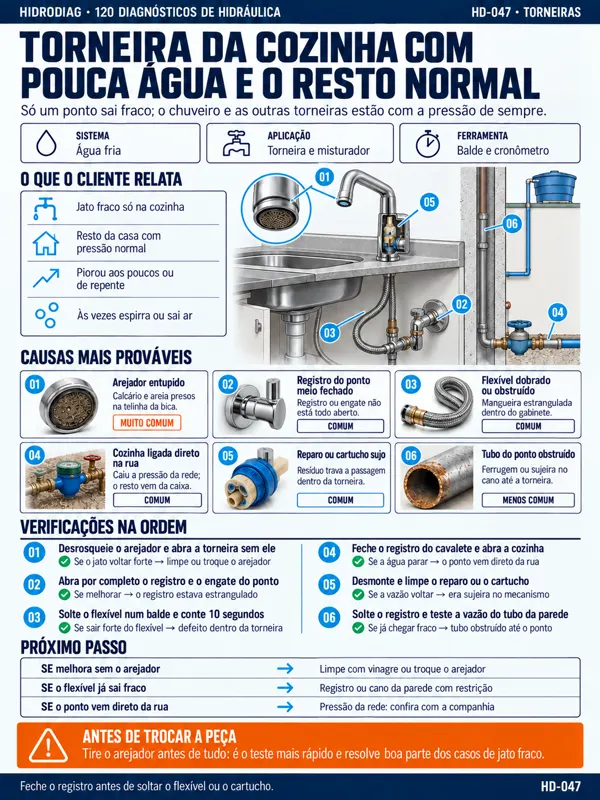
Toque numa ficha para ver em tamanho grande
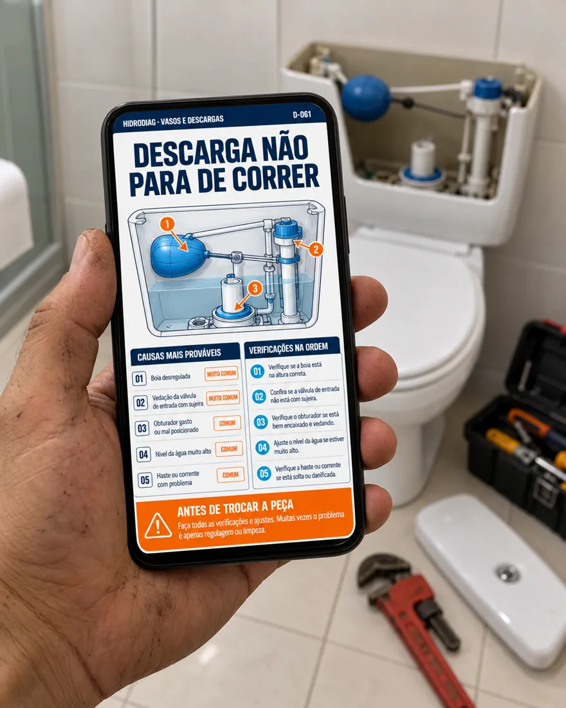
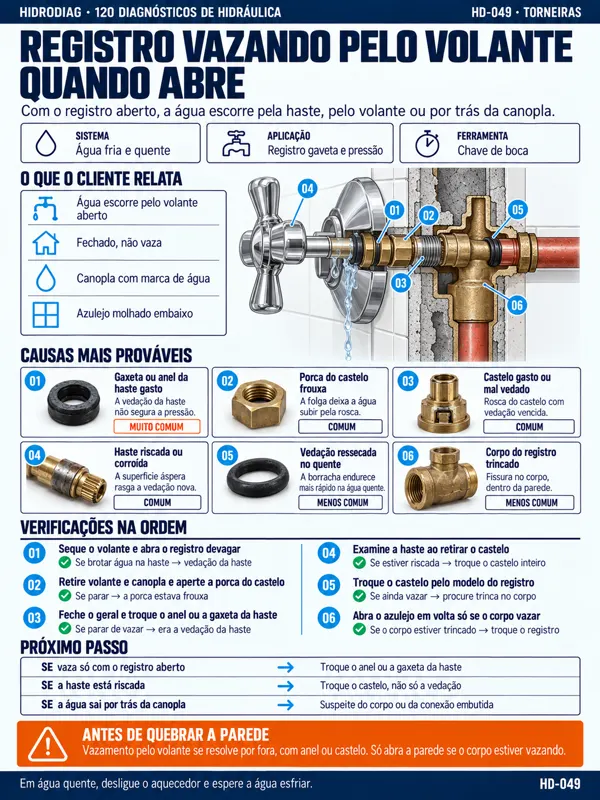
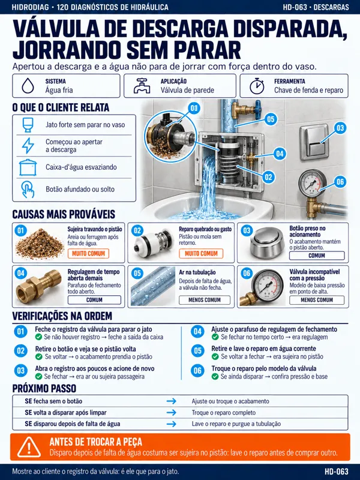
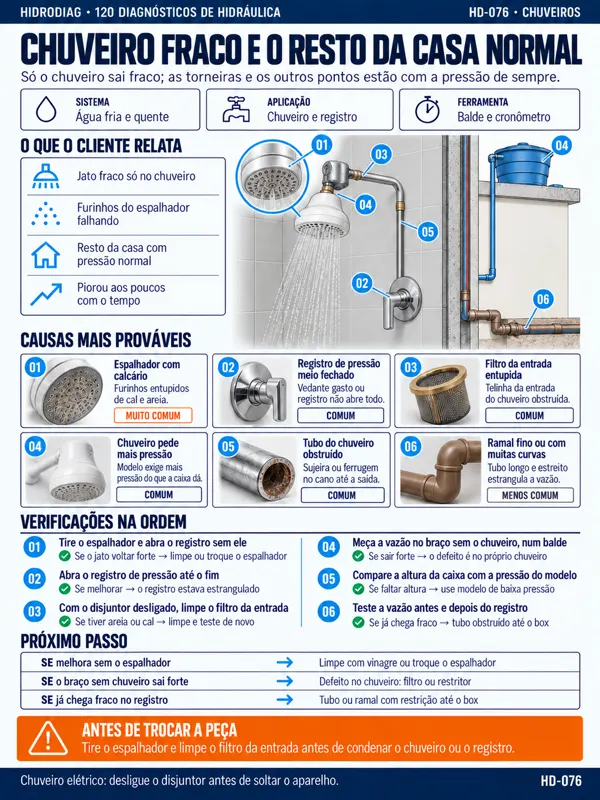
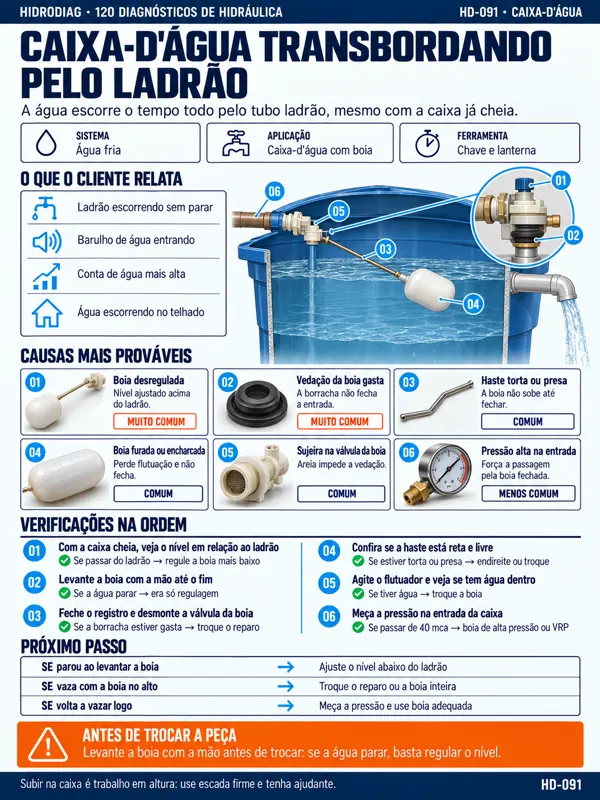
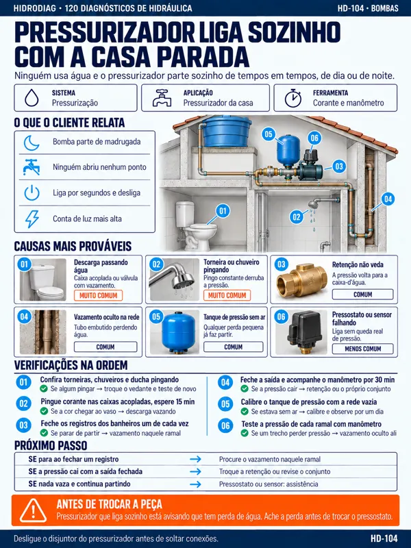
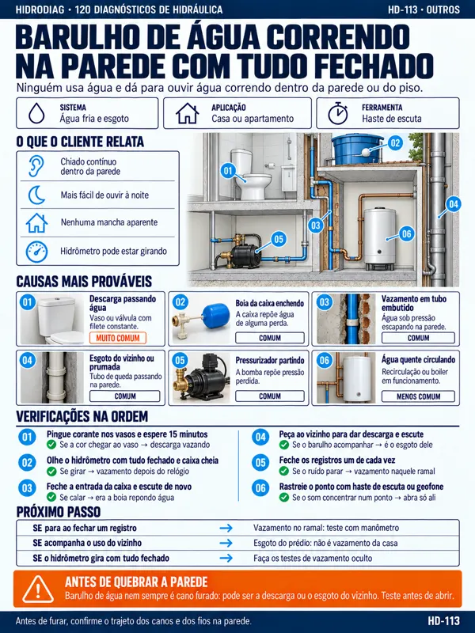
Ter um caminho definido para cada sintoma, em vez de ir trocando peça até o problema sumir.
Abrir no sintoma que o cliente mostrou e já ter a primeira verificação na frente, sem ficar decidindo por onde atacar.
Fazer as verificações que descartam as outras causas antes de abrir parede ou piso, ou de trocar registro, válvula e reparo.
Tirar a dúvida no próprio celular, em segundos, sem depender de YouTube, de grupo de WhatsApp ou de ligar para alguém.
Explicar o que está acontecendo e o que precisa ser feito com base em verificação, não em suposição.
Perder menos tempo em tentativa e erro e sobrar espaço na agenda para o próximo chamado.
Você abre o índice, acha o sintoma que está na sua frente e usa o diagnóstico com o problema ali, do seu lado.
Junto com os 120 diagnósticos, você também recebe…
🎁 4 BÔNUS EXCLUSIVOS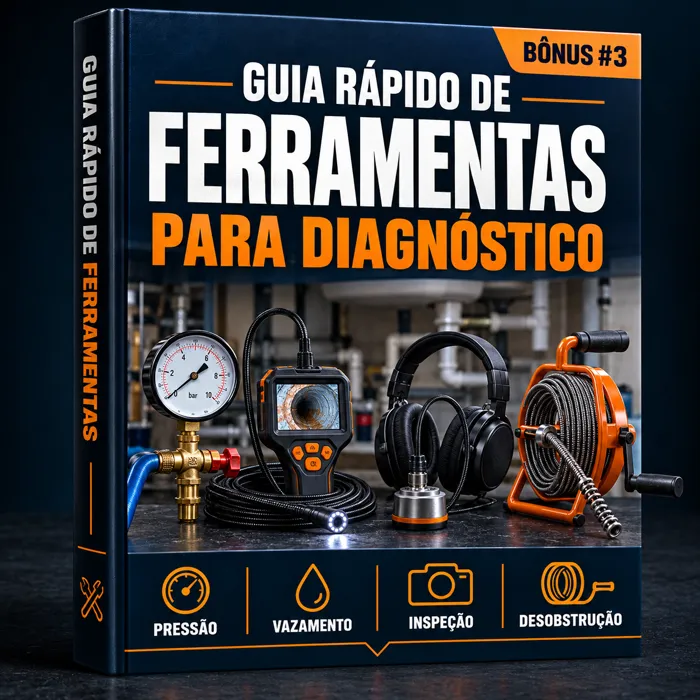
BÔNUS #1Qual ferramenta usar em cada verificação (haste e sonda de desentupimento, manômetro, geofone, câmera de inspeção), o que dá para confirmar com o que você já tem na caixa e em que caso o instrumento faz falta de verdade.
Valor: R$ 27 GRÁTIS
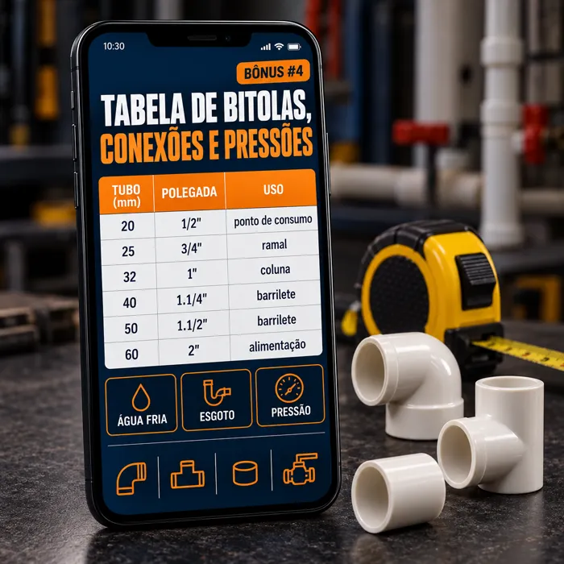
BÔNUS #2Medida do tubo em milímetro e em polegada, as conexões mais usadas e as faixas de pressão de referência, numa tabela pronta para abrir no celular durante o serviço.
Valor: R$ 27 GRÁTIS
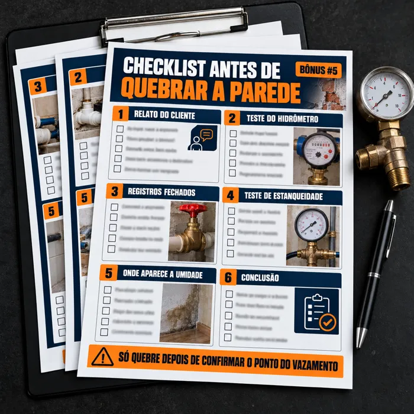
BÔNUS #3Uma lista objetiva para rodar antes de abrir parede ou piso. Se algum item não foi verificado, você ainda não sabe onde está o vazamento.
Valor: R$ 27 GRÁTIS
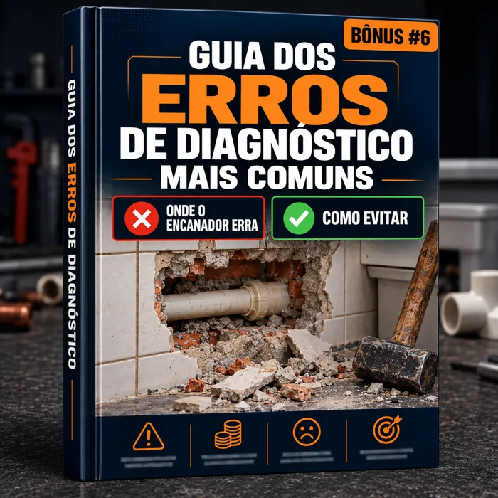
BÔNUS #4Os enganos que mais fazem encanador quebrar no lugar errado ou trocar peça boa: sintoma parecido, conclusão apressada, teste feito na ordem errada. Cada erro com o que fazer para não cair nele.
Valor: R$ 27 GRÁTIS
de R$ 147,90 por:
R$ 17,90
ou 4x de R$ 5,03
Você economiza R$ 130,00
🔒 Compra 100% segura e garantida.
Isso significa que, se nos próximos 30 dias você achar que:
você pede o reembolso e recebe 100% do valor de volta. Sem burocracia. O risco fica todo do nosso lado.
(Veja como é simples acessar os diagnósticos)
Depois do pagamento, seu acesso é liberado automaticamente.
Na mesma hora chega um e-mail com o acesso aos diagnósticos e aos bônus.
Salve tudo no celular, no tablet ou no computador.
Abra o diagnóstico com o problema na sua frente.
Sim. São problemas de hidráulica residencial, os mesmos que aparecem em casa e em apartamento: vazamento, entupimento, torneira, registro, descarga, chuveiro, caixa-d'água e bomba.
Não. O foco é a etapa do diagnóstico, ou seja, achar a causa do problema e saber o que verificar antes de quebrar ou trocar peça. A execução do reparo, o projeto e as normas técnicas continuam sendo responsabilidade e critério do profissional.
Sim. A linguagem é direta, sem teoria longa, e cada diagnóstico já vem com a ordem das verificações. É feito exatamente para quem sabe executar o serviço, mas ainda trava na hora de decidir qual é a causa.
É material de consulta, não é curso. Quem já tem estrada usa como checklist para não pular etapa, para conferir o problema que aparece pouco e para não quebrar parede por conclusão apressada.
Não. Quem diagnostica é você. O material organiza as causas prováveis, as verificações e a ordem delas, para você não depender só da memória nem de pesquisa no meio do atendimento.
São arquivos em PDF de alta resolução, para celular, tablet ou computador, com versão para imprimir em A4. Você baixa uma vez e os arquivos ficam salvos no aparelho, então dá para consultar mesmo sem sinal na casa do cliente.
Você tem 30 dias para pedir o reembolso, sem burocracia.